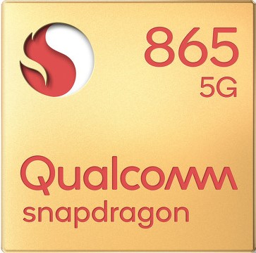
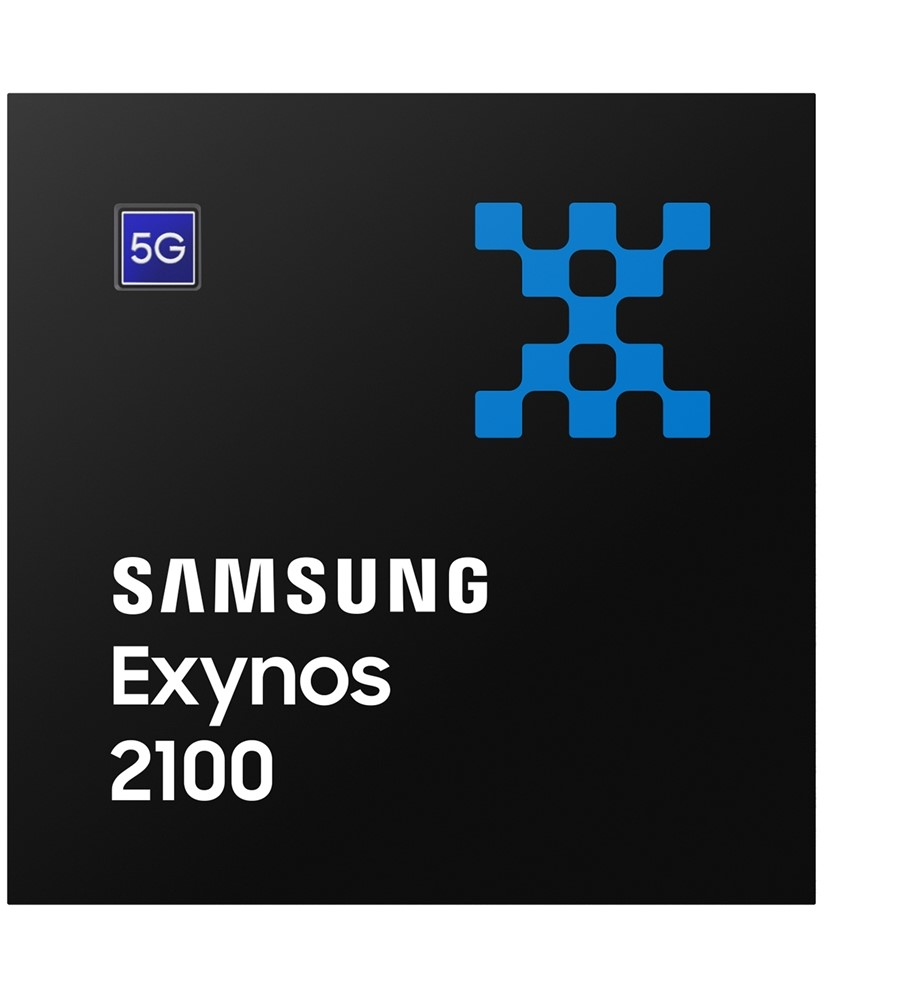

s20, 퀄컴 스냅드래곤 865 SM8250
- CPU: ARM Cortex-A77 MP1 2.84 GHz + ARM Cortex-A77 MP3 2.42 GHz
+ARM Cortex-A55 MP4 1.8 GHz 128 KB + 128 KB + 128 KB L1 Cache // 512 KB + 256 KB + 128 KB L2 Cache // 4 MB L3 Cache - GPU: Qualcomm Adreno 650 587 MHz
- 메모리: 16-bit 쿼드채널 LPDDR4X / LPDDR5 2133 MHz / 2750 MHz 메모리 대역폭 : 34.1 GB/s / 44 GB/s, 시스템 캐시 메모리 : 3 MB
- 생산 공정: TSMC 7nm FinFET P (ArFi) 다이 사이즈 : 83.54 mm², 트랜지스터 개수 : 10.3B
- 내장 모뎀: 없음

s21, 삼성 엑시노스 2100 SoC.
- CPU: ARM Cortex-X1 MP1 2.91 GHz + ARM Cortex-A78 MP3 2.81 GHz + ARM Cortex-A55 MP4 2.21 GHz
- GPU: ARM Mali-G78 MP14 858 MHz
- 메모리: 64-bit xx채널 LPDDR5 xxxx MHz
- 생산 공정: 삼성 파운드리 5nm FinFET LPE
- 내장 모뎀: 삼성 엑시노스/통신 모뎀 솔루션